CS184/284A · Fall 2026 · Alex Dils
Homework 1: Rasterizer
https://cal-cs184-student.github.io/hw1-alex-dils-writeup/ · https://alex-dils.com/courses/hw/hw1/
Summary
In this homework, I built a rasterizer that turns SVG shapes (continuous) into pixels (discrete). I started by rasterizing a triangle, then added supersampling to smooth the edges. I implemented translation, scaling, and rotation, used barycentric coordinates to blend colors and interpolate texture coordinates, and added nearest, bilinear, and mipmap sampling for textures. For extra credit, I optimized triangle filling, added jittered samples, allowed the viewport to rotate, and implemented anisotropic filtering.
I took away two lessons from the project. First, I learned a lot of C++ which I had not used before. Secondly, I learned the pipeline to represent SVG and how we can make some tradeoffs to get realistic loooking renders. For example, anisotropic filtering keeps more detail when that pixel's texture footprint is stretched differently in two directions. I also needed to keep colors and UV coordinates attached to their vertices when changing winding, and use a full-pixel UV offset for mip selection even with supersampling. Looking at the inspector views and timings helped me see the tradeoffs between smoother results, sharpness, memory, and rendering time.
Task 1: Drawing triangles
Rasterization is deciding which pixels should be mapped from a continous triangle. The triangle is defined by three vertices, which form continuous edges, but the screen is a grid of discrete pixels. For this task, I use one sample at the center of each pixel. If pixel P is inside the triangle or exactly on one of its edges, I give that pixel the triangle's color. Otherwise, I leave its current color unchanged.
Algorithm:
- Check the triangle's area
- Compute \(D = (x_1 - x_0)(y_2 - y_0) - (y_1 - y_0)(x_2 - x_0)\). This is twice the (signed) area because the cross product gives the area of the parallelogram formed by the two edge vectors. If D is zero, the vertices are collinear and there is no filled triangle area, so I return. If D is negative, I swap vertices 1 and 2. That gives the edge tests a consistent orientation without changing the triangle's shape.
- Find pixel bounding box
- I take the minimum and maximum x and y coordinates of the three vertices, round the lower bounds down and the upper bounds up, and clip the resulting integer ranges to the framebuffer. I return if the clipped box is empty. This keeps my loops on the screen and avoids considering the rest of the framebuffer.
- Prepare the three edge equations once
- I build equations for edges \(V_0 \to V_1\), \(V_1 \to V_2\), and \(V_2 \to V_0\). I store each edge's three coefficients before entering the sampling loops, so I do not repeatedly recompute them for every pixel.
- Test pixel centers in the basic path
- For each pixel in the bounding box, I evaluate all three edges at \((x + 0.5, y + 0.5)\). I accept the sample only when all three values are greater than or equal to zero. A negative value means the sample is outside at least one edge, so it cannot be inside the triangle.
- Store the sample's color
- I call
fill_pixel(x, y, color)for each accepted pixel center. This stores one color per pixel in the sample buffer; resolving the buffer copies that color to the displayed framebuffer. Every accepted pixel receives the same triangle color.
- I call
For an edge from \(A = (a_x, a_y)\) to \(B = (b_x, b_y)\), I use the 2D cross product:
I can expand this into \(E_{AB}(P) = a p_x + b p_y + c\), with
\(a = a_y - b_y\), \(b = b_x - a_x\), and
\(c = (b_y - a_y)a_x - (b_x - a_x)a_y\). These are the coefficients stored in my
Edge structure. After I normalize the triangle's orientation, a positive value
means P is on the interior side of that edge, zero means P is on the edge, and a negative
value means P is on the exterior side.
Why this is no worse than bounding-box method
I chose to restrict the loops to the triangle's bounding box because pixels outside that rectangle cannot belong to the triangle. My integer bounds conservatively include the triangle and may include an extra boundary row or column due to rounding. I never scan the entire framebuffer for each triangle. If B is the number of candidate pixels in this rounded box, the basic path takes \(O(B)\) time at one sample per pixel: there is constant setup work and at most three constant-time edge evaluations per candidate. This has the same asymptotic cost as the required bounding-box approach.
I also handle three important cases explicitly: zero-area triangles return immediately, reversed vertex order is normalized, and offscreen bounds are clipped before buffer writes. These choices keep the coverage test consistent and the memory accesses within the framebuffer.
Rendered result
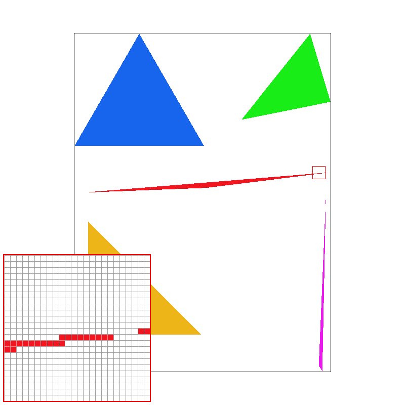
Extra credit: Optimization
I had two ideas for how to optimize this:
- Precompute the edge equations
- For each triangle, I compute the coefficients in \(E(P) = a p_x + b p_y + c\) once. At each pixel center, I only substitute its coordinates into the three prepared equations. This avoids rebuilding the edges inside the loop, although I still test every pixel in the bounding box.
- Fill covered spans
- A horizontal row intersects a triangle in at most one interval. I use the three edge inequalities to find its left and right limits, then fill only the pixel centers between them. If the interval is empty, I skip the row. This avoids testing empty parts of the bounding box, especially for thin triangles.
I compare four versions: vanilla recomputes the cross products at every pixel center; idea 1 precomputes the edge equations but still checks the bounding box; idea 2 finds covered spans and rebuilds the edge equations for each row; 1 + 2 combines precomputed edges with spans.
| Scene | Vanilla (ms) | Idea 1 (ms) | Idea 2 (ms) | 1 + 2 (ms) |
|---|---|---|---|---|
| test4.svg | 0.162 | 0.154 | 0.026 | 0.028 |
| test6.svg | 0.382 | 0.322 | 0.054 | 0.052 |
Task 2: Antialiasing by supersampling
In Task 1, I made a binary decision at the center of each pixel. The issue is that this can miss a thin triangle even when it covers part of the pixel. For this task, I take several samples spread across each pixel and average their colors. A pixel partly covered by a triangle gets a mix of the triangle and background colors, which makes the edge look smoother.
Algorithm:
- Divide each pixel into a grid
- I use \(N = \text{sample\_rate}\) samples per pixel and \(d = \sqrt{N}\) cells along each dimension. I sample the center of each cell. For cell \((s_x, s_y)\), the sample position is \(P = \left(x + \frac{s_x + 0.5}{d},\ y + \frac{s_y + 0.5}{d}\right)\). At 4 samples per pixel this gives a \(2 \times 2\) grid, and at 16 it gives a \(4 \times 4\) grid. At one sample, it gives the same pixel center as Task 1.
- Allocate space for every sample
- I store floating-point
Colorvalues insample_buffer, with all samples for a pixel next to each other. For a framebuffer of width \(W\) and height \(H\), the buffer has \(WHN\) entries. Within a pixel, I use \(s = s_y d + s_x\), so the buffer index is \((yW + x)N + s\). I resize the buffer when the window dimensions or sample rate change, and clear all samples to white before each redraw.
- I store floating-point
- Test and color individual samples
- I keep the winding, bounding box, and inclusive edge tests from Task 1, but apply them to the subpixel positions. An accepted sample gets the triangle's color through
fill_sample; an outside sample keeps its previous color. The span optimization also works on these regular sample rows. I resolve only after all scene elements have drawn, so later triangles overwrite just the samples they cover.
- I keep the winding, bounding box, and inclusive edge tests from Task 1, but apply them to the subpixel positions. An accepted sample gets the triangle's color through
- Keep points and lines working
- I change
fill_pixelto fill all \(N\) samples of a pixel with the same color. Points and lines still use this helper, so they remain visible when supersampling is enabled. I do not antialias these primitives.
- I change
- Average into the framebuffer
- In
resolve_to_framebuffer, I add the sample colors for each pixel and divide by \(N\). I clamp each RGB component to \([0,1]\), multiply by 255, and round to an 8-bit value for the display. This happens once at the end ofDrawRend::redraw, after the SVG and its boundary have been rasterized.
- In
If \(k\) samples contain the triangle's color and the rest contain the background color, the average gives the triangle a weight of \(k/N\). This estimates how much of the pixel the triangle covers. It reduces the abrupt changes caused by a single sample, at the cost of more sample storage and rasterization work.
Rendered results
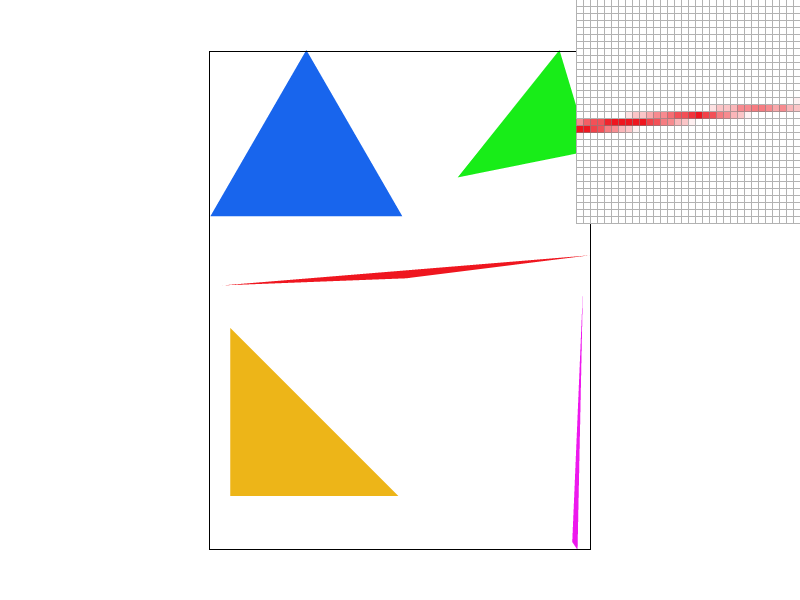
At one sample per pixel, the enlarged edge has solid red pixels and gaps where the tip misses a pixel center. At four samples, some pixels receive only part of the red color, so the tip is more continuous. At sixteen samples, there are more possible coverage fractions and the transition becomes more gradual. A very thin part can still miss every sample; supersampling improves the estimate without making it exact.
Extra credit: Jittered sampling
I implemented a jittered pattern that keeps one sample in each grid cell but moves it away from the cell center.
- Move the sample within each cell
- I generate two offsets \(\xi_x, \xi_y \in (0,1)\) and use \(P = \left(x + \frac{s_x + \xi_x}{d},\ y + \frac{s_y + \xi_y}{d}\right)\). Keeping one sample in each cell spreads the samples across the pixel, while moving them breaks the regular alignment that can miss repeating details. I test each jittered sample against the three edges because the samples no longer form evenly spaced horizontal spans.
- Keep the pattern consistent
- I compute the offsets from the pixel coordinates and sample index using a deterministic integer hash. Every triangle uses the same positions for a given pixel, and redrawing produces the same image. This keeps shared edges and overlapping triangles consistent. At one sample per pixel, I retain the Task 1 center sample.
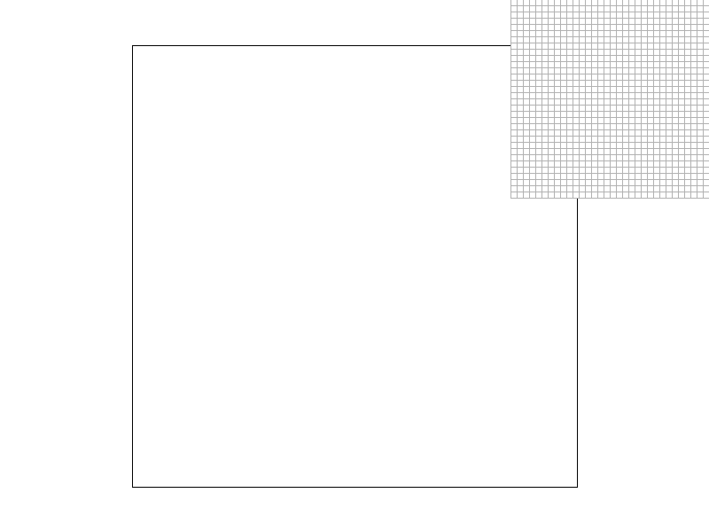
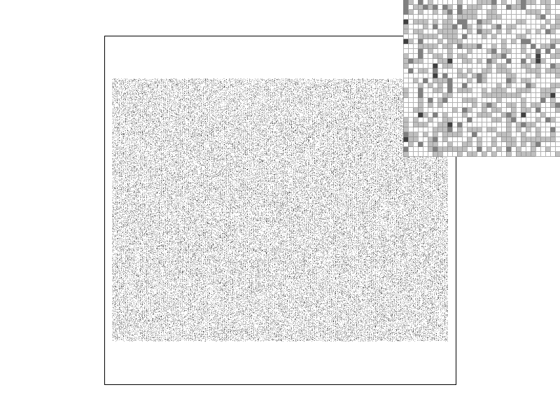
Task 3: Transforms
I use transforms to move, resize, and rotate shapes before rasterizing them. I represent a point as \((x,y,1)\), so all three operations can use a \(3 \times 3\) matrix. The last coordinate lets translation work through matrix multiplication, just like scaling and rotation
Algorithm:
- Translate the point
- I put the horizontal and vertical offsets in the last column. Multiplying by this matrix changes \((x,y)\) to \((x+d_x,y+d_y)\), without changing the shape's size or orientation.
\[T = \begin{pmatrix}1 & 0 & d_x \\ 0 & 1 & d_y \\ 0 & 0 & 1\end{pmatrix}\]
- I put the horizontal and vertical offsets in the last column. Multiplying by this matrix changes \((x,y)\) to \((x+d_x,y+d_y)\), without changing the shape's size or orientation.
- Scale the point
- I put the scale factors on the diagonal. This changes \((x,y)\) to \((s_xx,s_yy)\). Using different factors stretches the shape differently along each axis. Scaling happens around the origin of the current coordinate system.
\[S = \begin{pmatrix}s_x & 0 & 0 \\ 0 & s_y & 0 \\ 0 & 0 & 1\end{pmatrix}\]
- I put the scale factors on the diagonal. This changes \((x,y)\) to \((s_xx,s_yy)\). Using different factors stretches the shape differently along each axis. Scaling happens around the origin of the current coordinate system.
- Rotate the point
- I convert the angle from degrees to radians, then use sine and cosine to rotate around the origin. The matrix is counterclockwise in Cartesian coordinates. Since SVG coordinates increase downward along the y axis, a positive angle appears clockwise in the rendered image.
\[\theta = \mathrm{deg}\,\frac{\pi}{180},\qquad R = \begin{pmatrix}\cos\theta & -\sin\theta & 0 \\ \sin\theta & \cos\theta & 0 \\ 0 & 0 & 1\end{pmatrix}\]
- I convert the angle from degrees to radians, then use sine and cosine to rotate around the origin. The matrix is counterclockwise in Cartesian coordinates. Since SVG coordinates increase downward along the y axis, a positive angle appears clockwise in the rendered image.
Rendered
I made cubeman dab. I move the right shoulder to \((50,-30)\), rotate the upper arm by \(-35^\circ\), and leave the forearm aligned with it so that arm extends upward. At the left shoulder, I rotate the upper arm by \(-145^\circ\) and translate a child group 70 units to the elbow. Rotating that child by \(130^\circ\) brings the forearm across the face. I move the head to \((-18,-96)\), tilt it by \(25^\circ\), and keep the legs spread slightly.
I saved the custom SVG as my_robot.svg. The PNG below comes from the renderer's S hotkey at 16 samples per pixel.

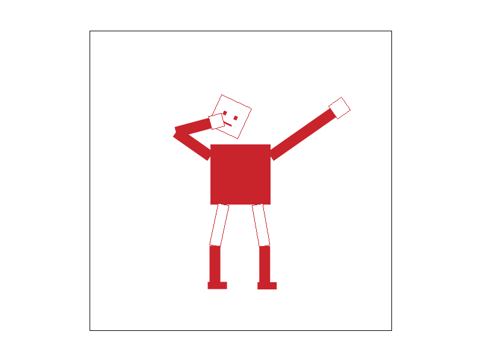
Extra credit: Rotate the viewport
I added [ and ] to rotate the view in 10-degree steps. [ rotates it counterclockwise on screen, and ] rotates it clockwise. Each SVG tab remembers its own angle, and Space resets the active tab's angle and view.
This rotates the whole scene around the center of the viewport. I apply the same matrix to the canvas outline, so it turns with the drawing. When dragging a rotated view, I rotate the mouse displacement by the inverse angle before updating the view center. The image below was saved with S after one press of ].
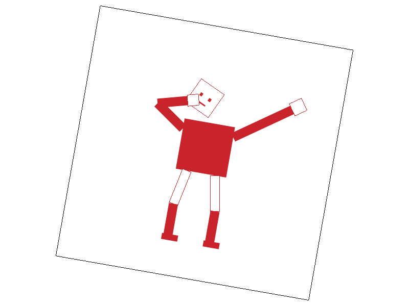
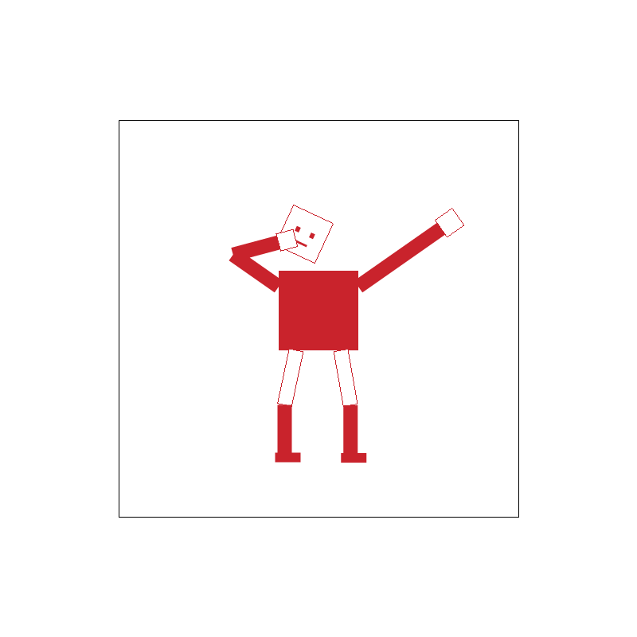
Task 4: Barycentric coordinates
Barycentric coordinates describe a point as a weighted combination of a triangle's three vertices. I use one weight for each vertex, with the three weights adding to one. Inside the triangle, the weights are nonnegative. At a vertex, its weight is one and the other two are zero. On an edge, the weight for the opposite vertex is zero. This gives me a way to blend the vertex colors smoothly across the triangle.
Algorithm:
- Prepare the triangle
- I check the signed area and return if the triangle has no area. If the winding is reversed, I swap vertices 1 and 2 along with their colors, so each color stays attached to its vertex. I clip the triangle's bounding box to the framebuffer and prepare the three edge equations once.
- Find the sample's weights
- I evaluate the three edges at the sample position. A negative edge value means the sample is outside, while zero is included so boundary samples are drawn. Each weight is the area of the subtriangle opposite its vertex divided by the whole triangle's area. The edge functions give twice those signed areas, so the factor of two cancels. With \(D=E_{01}(V_2)\), I use:
\[\alpha=\frac{E_{12}(P)}{D},\qquad \beta=\frac{E_{20}(P)}{D},\qquad \gamma=\frac{E_{01}(P)}{D}\]
- I evaluate the three edges at the sample position. A negative edge value means the sample is outside, while zero is included so boundary samples are drawn. Each weight is the area of the subtriangle opposite its vertex divided by the whole triangle's area. The edge functions give twice those signed areas, so the factor of two cancels. With \(D=E_{01}(V_2)\), I use:
- Blend the colors
- Like we talked about in lecture, I multiply each vertex color by its weight and add the results. I apply the same weights to the red, green, and blue components. This produces the vertex's own color at that vertex, a blend of two colors along an edge, and a blend of all three in the interior.
\[C(P)=\alpha C_0+\beta C_1+\gamma C_2\]
- Like we talked about in lecture, I multiply each vertex color by its weight and add the results. I apply the same weights to the red, green, and blue components. This produces the vertex's own color at that vertex, a blend of two colors along an edge, and a blend of all three in the interior.
- Store and resolve the samples
- At one sample per pixel, I evaluate the pixel center. At higher sample rates, I evaluate each grid sample separately; when jitter is enabled, I use the same deterministic sample positions as the single-color triangles. I store each covered sample's interpolated color with
fill_sample. The existing resolve step averages the samples into the final framebuffer after the scene is drawn.
- At one sample per pixel, I evaluate the pixel center. At higher sample rates, I evaluate each grid sample separately; when jitter is enabled, I use the same deterministic sample positions as the single-color triangles. I store each covered sample's interpolated color with
Rendered
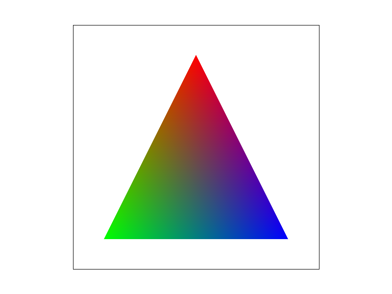
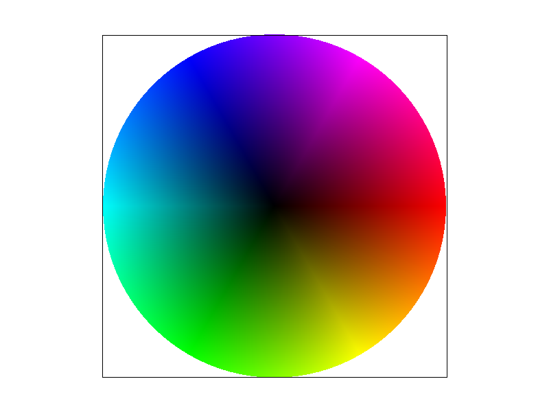
Task 5: Pixel sampling
Pixel sampling determines which texture color to use at a continuous UV coordinate. The texture stores discrete pixels called texels. I use the barycentric weights from Task 4 to interpolate the UV coordinates across each triangle, then sample the texture at that location.
Algorithm:
- Interpolate the texture coordinates
- I keep the bounding box, winding normalization, and inclusive coverage tests. When swapping vertices, I also swap their UV coordinates. For each covered sample, I combine the three vertex UVs using its barycentric weights:
\[(u,v)=\alpha(u_0,v_0)+\beta(u_1,v_1)+\gamma(u_2,v_2)\]
- I keep the bounding box, winding normalization, and inclusive coverage tests. When swapping vertices, I also swap their UV coordinates. For each covered sample, I combine the three vertex UVs using its barycentric weights:
- Sample the nearest texel
- For a mip level of width \(W\) and height \(H\), I select indices \(\lfloor uW\rfloor\) and \(\lfloor vH\rfloor\). I clamp the UV coordinates and indices at the texture boundary. Each texel's center is at \(((i+0.5)/W,(j+0.5)/H)\). Nearest sampling returns one texel's color, so the result changes abruptly when the sample crosses into another texel.
- Blend four neighboring texels
- For bilinear sampling, I use texel coordinates \(x_t=uW-0.5\) and \(y_t=vH-0.5\). I find the four surrounding texels and use the fractional offsets \(s=x_t-\lfloor x_t\rfloor\) and \(t=y_t-\lfloor y_t\rfloor\). I blend horizontally, then vertically, and clamp each neighbor's index at the boundary:
\[C=(1-s)(1-t)C_{00}+s(1-t)C_{10}+(1-s)tC_{01}+stC_{11}\]
- For bilinear sampling, I use texel coordinates \(x_t=uW-0.5\) and \(y_t=vH-0.5\). I find the four surrounding texels and use the fractional offsets \(s=x_t-\lfloor x_t\rfloor\) and \(t=y_t-\lfloor y_t\rfloor\). I blend horizontally, then vertically, and clamp each neighbor's index at the boundary:
- Store each sample's color
- I pass the interpolated UVs and the selected sampling modes to
Texture::sample. It calls the nearest or bilinear helper at the chosen mip level. I write that color withfill_sample, and the existing resolve step averages all samples in each pixel. P switches the pixel sampler. For the comparisons below, I hold the level sampler atL_ZERO.
- I pass the interpolated UVs and the selected sampling modes to
Rendered
I use texmap/test5.svg, magnified to show the seal's lettering and gold edges. All four PNGs use the same view and inspector position, saved with S. The first row uses one sample per pixel; the second uses sixteen.
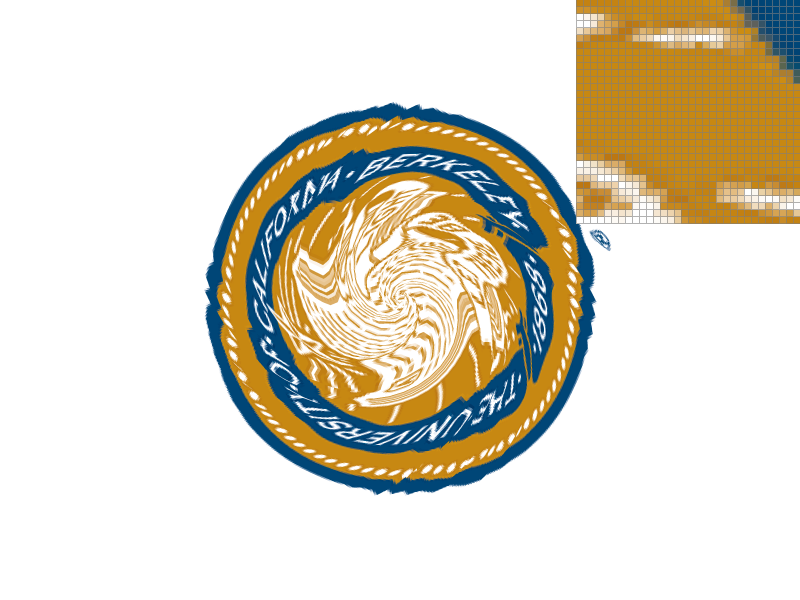
At one sample per pixel, nearest sampling produces sharp steps between gold, white, and blue. Bilinear sampling adds intermediate colors along those boundaries, making the lettering and curved details smoother. Sixteen samples average several texture lookups within each pixel, improving both the texture transitions and triangle edges. Bilinear at sixteen samples gives the smoothest transitions in this comparison.
The difference is large when texels are magnified or contain high-contrast details. It is smaller in regions where neighboring texels already have similar colors. When many texels fit inside one screen pixel, bilinear sampling's four neighbors do not cover the whole footprint... mipmaps help with that case.
Task 6: Level sampling with mipmaps
Level sampling chooses a texture resolution that matches the size of a screen pixel's footprint. The original image is level zero. Each later mip level stores a smaller, prefiltered version. When a pixel covers many original texels, sampling a reduced level averages that detail before rasterization and reduces aliasing.
Algorithm:
- Find the UV change across one pixel
- I calculate UV coordinates at the sample, one screen pixel to its right, and one screen pixel below it. UV interpolation is affine within each triangle, so I precompute its horizontal and vertical changes from the edge coefficients and add those changes to each sample's UV. I store the three positions in
p_uv,p_dx_uv, andp_dy_uv. These offsets remain one full screen pixel even when supersampling is enabled.
- I calculate UV coordinates at the sample, one screen pixel to its right, and one screen pixel below it. UV interpolation is affine within each triangle, so I precompute its horizontal and vertical changes from the edge coefficients and add those changes to each sample's UV. I store the three positions in
- Estimate the texture footprint
- In
get_level, I subtract the sample's UV from the neighboring UVs and scale their components by the original texture's width \(W\) and height \(H\). I take the longer of the two vectors as the footprint size \(\rho\):\[d_x=\bigl(W(u_x-u),\,H(v_x-v)\bigr),\qquad d_y=\bigl(W(u_y-u),\,H(v_y-v)\bigr)\]\[\rho=\max(\|d_x\|,\|d_y\|),\qquad \ell=\max(0,\log_2\rho)\]A footprint of two texels selects level one; four texels selects level two. If the footprint is at most one texel, I use level zero without taking the logarithm. I clamp the result to the available mip levels.
- In
- Choose or blend the levels
L_ZEROalways uses the original image.L_NEARESTrounds \(\ell\) to the nearest level.L_LINEARsamples the levels below and above \(\ell\), then blends their colors using its fractional part:\[C=(1-f)C_{\lfloor\ell\rfloor}+fC_{\lceil\ell\rceil},\qquad f=\ell-\lfloor\ell\rfloor\]
- Apply the pixel sampler
- The pixel and level choices are independent. Each selected mip level uses either nearest or bilinear sampling. Combining
L_LINEARwithP_LINEARgives trilinear filtering: bilinear sampling within each of two levels, followed by interpolation between them. L cycles the level sampler, and P cycles the pixel sampler.
- The pixel and level choices are independent. Each selected mip level uses either nearest or bilinear sampling. Combining
- Populate the full mip chain
- I use the starter's averaging filter to construct progressively smaller images, and make sure the generation loop fills every allocated level through the last \(1\times1\) image. Sampling accesses each level by reference, so it does not copy the texture data.
Tradeoffs
| Technique | Work and memory | Effect |
|---|---|---|
| Pixel sampling | Nearest reads one texel; bilinear reads four. Both use the same texture storage. | Bilinear smooths transitions between texels, especially during magnification. |
| Level sampling | Blending two levels uses up to two nearest or eight bilinear texel reads. A full mip chain adds about one third to a large square texture's storage. | Prefiltered levels reduce texture aliasing during minification. Trilinear filtering softens changes between mip resolutions, with some loss of fine detail. |
| Supersampling | \(N\) samples repeat the rasterization and texture lookup work. The sample buffer stores \(WHN\) floating-point colors for a \(W\times H\) framebuffer. | More samples improve pixel coverage and average texture variation within a pixel. They cost more rendering time and sample memory. |
Rendered
At level zero, fine terrain details have abrupt color changes, and the inspector shows sharp steps along the coastline. Bilinear sampling softens nearby texel transitions, but still uses the full-resolution image. Choosing a mip level averages more of the original terrain detail and reduces the speckled appearance. Adding bilinear sampling smooths the coastline within that reduced level. The tradeoff is that small islands and narrow features become softer or disappear.
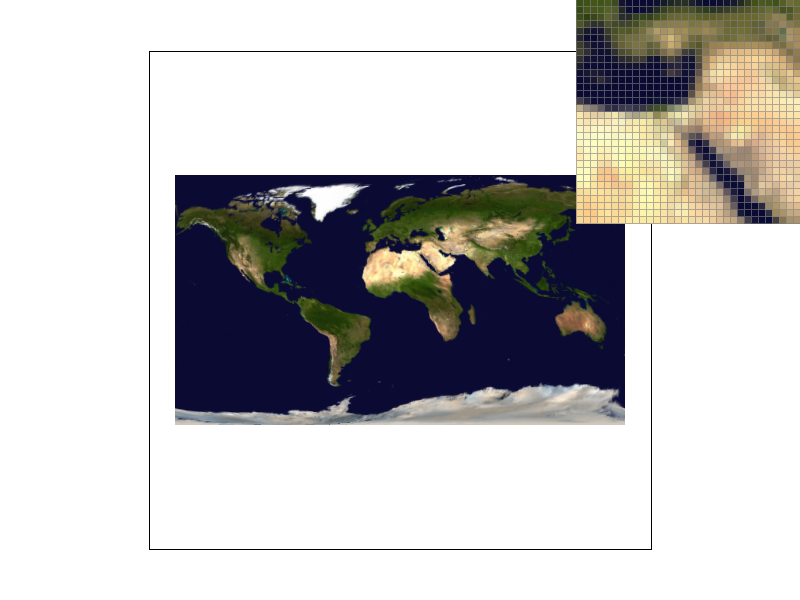
The trilinear image blends adjacent mip levels instead of switching to a single rounded level. This makes the filtering change more gradually as the texture footprint varies across the mesh.
Extra credit: Anisotropic filtering
A screen pixel can cover a long, narrow region of a texture. Using one mip level for both directions can blur details along the narrower direction. I added anisotropic filtering, which takes several trilinear samples along the longer direction and averages them.
- Find the footprint's two main directions
- I reuse the UV changes from Task 6 and scale them into texel units. I put these vectors into a matrix \(J\), then use the eigenvalues of \(J^T J\) to find the long and short axis lengths, \(\sigma_{\mathrm{major}}\) and \(\sigma_{\mathrm{minor}}\). I also calculate the long axis's direction in texture space. This accounts for rotation and shear, rather than assuming the longest direction is horizontal or vertical.
- Choose the mip level and sample count
- I choose the mip level from the short axis, then place enough samples along the long axis to cover its extent. I limit the count to eight. If the footprint is more stretched than that, I increase the mip width so the eight samples still cover it:
\[w=\max\left(1,\sigma_{\mathrm{minor}},\frac{\sigma_{\mathrm{major}}}{8}\right),\qquad n=\min\left(8,\max\left(1,\left\lceil\frac{\sigma_{\mathrm{major}}}{w}\right\rceil\right)\right)\]I use \(\ell=\log_2 w\), clamped to the available mip levels. The one-texel minimum keeps magnified textures at level zero.
- I choose the mip level from the short axis, then place enough samples along the long axis to cover its extent. I limit the count to eight. If the footprint is more stretched than that, I increase the mip width so the eight samples still cover it:
- Average the trilinear samples
- I distribute the \(n\) sample centers evenly along the long axis, centered around the original UV. Each sample uses bilinear filtering at the two neighboring mip levels, followed by the usual interpolation between levels. I average their colors before writing the rasterization sample. With a nearly square footprint, this reduces to one lookup. A switches this mode on and off; when it is off, the existing P and L choices apply again.
Rendered comparison
I generated a \(512\times512\) texture with narrow vertical stripes and alternating orange and blue bands. The texture is compressed much more in one direction than the other. All four PNGs use the same default view, one sample per pixel, and the same pixel inspector position. They were generated through the renderer's S screenshot handler.
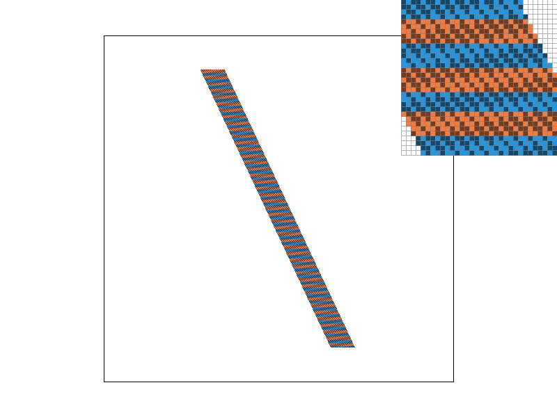
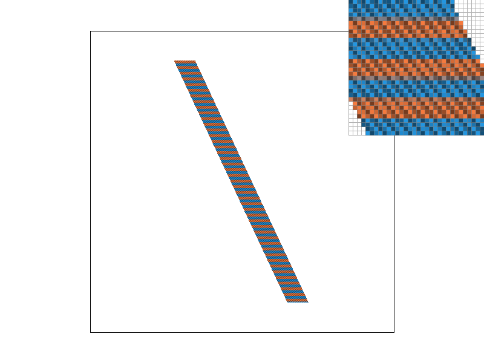
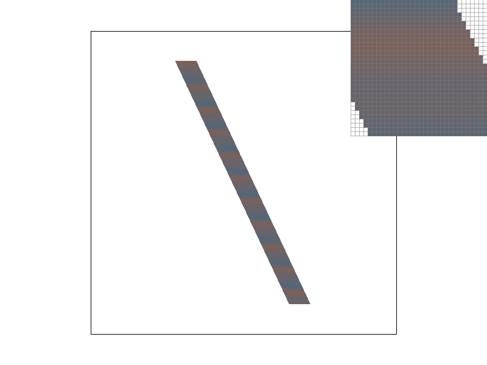
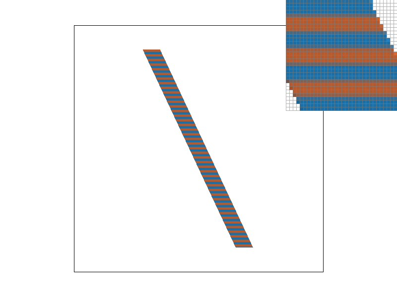
Nearest and bilinear sampling leave a fine pattern that changes with the texture's alignment to the screen. Trilinear sampling reduces that pattern, but also mixes the orange and blue bands because its mip level filters both directions equally. Anisotropic sampling averages across the strongly compressed direction while keeping the bands more distinct in the other direction. It still softens boundaries, and the eight-tap limit means extremely stretched footprints can lose detail.
Timing comparison
| Method | Time per draw (ms) | Time relative to nearest |
|---|---|---|
| Nearest | 1.306 | 1.00× |
| Bilinear | 1.630 | 1.25× |
| Trilinear | 2.786 | 2.13× |
| Anisotropic | 11.880 | 9.10× |